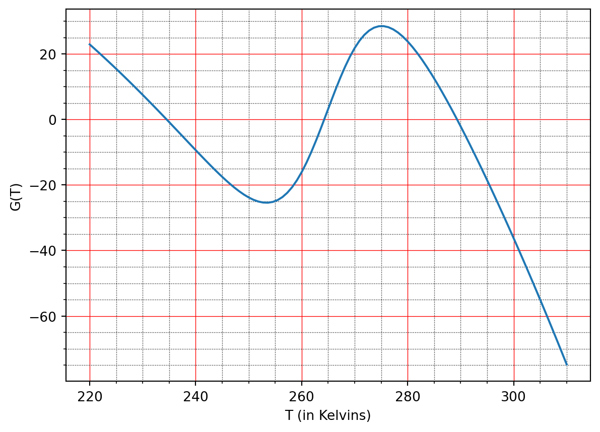

Using the standard value of \(\sigma = 5.67\times 10^{-8} \mathrm{W}\, \mathrm{m}^{-2} \mathrm{K}^{-4}\) and \(T_0 = 273.15 \mathrm{K}\), then \(\bar{A} = 315.6 \mathrm{W} \, \mathrm{m}^{-2}\) and \(\bar{B} = 4.62 \mathrm{W} \, \mathrm{m}^{-2} \, \mathrm{K}^{-1}\).
Q1b solution
The code is given below. Below, the dashed line is for the Budyko approximation, while the green curve is the Stefan Boltzmann law. The horizontal axis is \(\bar{T}\), so note that the green curve is given by \(\sigma \gamma (T_0 + \bar{T})^4\).
As can be seen, the linear approximation mostly duplicates the three necessary steady states at the advantage of great analytical simplification. It seems that the hottest state (the one the Earth is presently in) is predicted slightly higher.
The variation seems to be very small. Ignoring units, we have \[
T = \left(\frac{1-a}{\sigma \gamma}\right)^{1/4} Q^{1/4} \approx 67.3505 \times Q^{1/4}.
\] Substituting the values of \(Q\) given this gives a temperature that ranges from \(T = 289.499 \, \mathrm{K}\) to \(289.580 \, \mathrm{K}\). Converting this to Celsius gives \(16.35 \, {}^\circ \mathrm{C}\) to \(16.43 \, {}^\circ \mathrm{C}\) i.e. a fraction of a degree.
Q2b solution
We obtain the range of approximately \(T = 17.06 \, {}^\circ \mathrm{C}\) to \(17.19 \, {}^\circ \mathrm{C}\).
Q2c solution
There are many ways to respond, but one major factor is the oceans, which are ignored in our model. The oceans provide a massive energy sink for the planet, and so we would expect that the minor variations of \(Q\) due to the 11-year cycle would be smoothed out by the effects of the oceans.
Q3. Phase line analysis
Consider the energy balance equation \[
C \frac{\mathrm{d}T}{\mathrm{d}t} = Q(1 - a(T)) - \sigma \gamma T^4 \equiv G(T).
\tag{38.1}\] with \(a\) given by (Equation 15.2). Because the differential equation is autonomous, we can apply phase-line analysis in order to qualitatively understand the evolution. Below is a plot of the function \(G\):
import numpy as npimport matplotlib.pyplot as pltQ =342; sigma =5.67e-8; gam =0.6;a =lambda T: 0.5-0.2*np.tanh(0.1*(T-265));T = np.linspace(220, 310, 100);G = Q*(1-a(T)) - sigma*gam*T**4fig, ax = plt.subplots()ax.plot(T, G)ax.grid(); ax.minorticks_on();# Customize the major gridax.grid(which='major', linestyle='-', linewidth='0.5', color='red')# Customize the minor gridax.grid(which='minor', linestyle=':', linewidth='0.5', color='black')plt.xlabel('T (in Kelvins)'); plt.ylabel('G(T)');

Sketch the solution \(T(t)\) of this equation for \(t > 0\) if \(T(0) = 230, 240, 260, 270\) and \(300\).
Sketch the solution \(T(t)\) of this equation for \(t > 0\) if \(T(0) = 285\). Then sketch the solution of this equation with the same initial data in the same coordinate system if \(C\) is twice as large. Explain your answer.
If \(\gamma\) is decreased due to the increased greenhouse effect, the entire curve is shifted upwards. Sketch the solution if \(T(0) = 280\). Sketch the solution with the same initial data if \(\gamma\) is decreased. Explain your answer.
Q4. Evolution
Consider again (Equation 38.1). Let \(T^*\) be a steady-state solution and set \(T = T^* + u(t)\) where \(u(t)\) is a small perturbation from the steady state.
Show that the perturbation satisfies \[
C \dot{u} = -D u + O(u^2).
\] and hence solve for the general solution of the leading-order perturbation (ignoring quadratic terms). What are the conditions on \(T^*\) so that the steady state is linearly stable?
Assuming \(T^*\) is linearly stable, find the typical response time to a perturbation. For instance, what is the time it takes for the perturbation to reach the value \(u(t) = 0\) if \(u(0) = 1\)? How does this response time change with \(C\)? What is the physical interpretation of this regarding the climate?
Q5. Integral of energy over the planet
Q5 solution
This is a straightforward calculation without tricks. Since \(Q\) is constant, we have \[
I = 2\pi R_E^2 Q\int_{\varphi = -\pi/2}^{\pi/2} s(y = \sin\varphi) \cos\varphi \, \mathrm{d}\varphi.
\] Converting now to integration in \(y\), we have \[
I = 2\pi R_E^2 Q\int_{y = -1}^{1} s(y) \, \mathrm{d}y.
\] Examining the function \(s(y)\) in Equation 16.3 we note that it is symmetric in \(y\) and has been defined so its integral is one. Thus \[
I = 4\pi R_E^2 Q.
\] This is the solar constant multiplied by the surface area of the planet (a sphere).
Q6. Mean temperature in the latitude-dependent EBM
Q6a solution
We have from integration, \[
C \frac{\mathrm{\partial}}{\mathrm{\partial}t} \int_0^1 T \, \mathrm{d}y = Q\int_0^1 s(y) \, \mathrm{d}y - Q \int_0^1 s(y)a(y) \, \mathrm{d}y - (A + B\bar{T}) + k\bar{T} - k\bar{T}.
\] Simplifying and using the property of \(s\) gives \[
C \frac{\mathrm{\partial}\bar{T}}{\mathrm{\partial}t} = Q(1 - \bar{a}) - (A + B\bar{T}),
\] where we have defined \[
\bar{a} = \int_0^1 s(y)a(y) \, \mathrm{d}y = \int_0^{y_s} s(y) a_w \, \mathrm{d}y +\int_{y_s}^1 s(y) a_i \, \mathrm{d}y.
\]
Q6b solution
Again this question is free of tricks and only involves the integration using \[
s(y) = 1 - S_2 P_2(y)
\] where \(S_2 = 0.482\) and \(P_2(y) = \frac{1}{2}(3y^2 - 1)\). It is useful to compute the two quantities \[
\begin{align}
\int_0^{y_s} s(y) \, \mathrm{d}y &= y_s - \frac{S_2}{2} \left(y_s^3 - y_s\right), \\
\int_{y_s}^1 s(y) \, \mathrm{d}y &= 1 - y_s + \frac{S_2}{2} \left(y_s^3 - y_s\right).
\end{align}
\] Multiply the first quantity by \(a_w\) and add to the second multiplied by \(a_i\) and simply to obtain \[
\bar{a} = a_i + (a_w - a_i)y_s \left[ 1 - \frac{S_2}{2}(y_s^2 - 1)\right].
\]